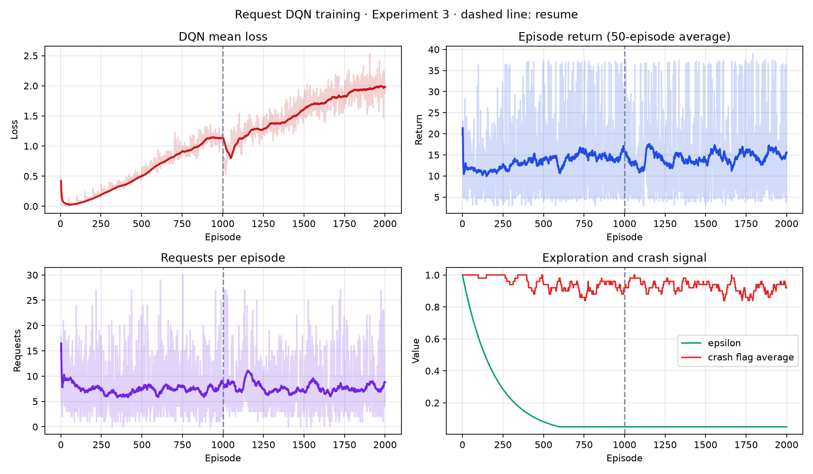

Experiment 3: Spatial Slot Realignment & Baseline
Experiment 3 resolved the message-alignment flaw by binding neighbor messages into 8 fixed spatial slots around the ego car. This produced the project's stable reference baseline checkpoints (WM3 and DQN3).
- World Model Checkpoint:
checkpoints/experiment_3/MLPx/best.pt - Request DQN Checkpoint:
checkpoints/experiment_3/RequestDQN/best.pt
Objective & Hypothesis
By organizing messages into fixed relative spatial coordinates (left-front, left-beside, etc.) and masking empty slots in the DQN action space, does the world model learn consistent spatial representations and improve decision agreement?
The Spatial Slot Architecture
Messages and DQN request actions were mapped to 8 fixed spatial positions within 60 meters:
LEFT LANE SAME LANE RIGHT LANE
┌─────────────────────┐┌─────────────────────┐┌─────────────────────┐
│ 0: Left-Front ││ 3: Same-Lane-Front ││ 5: Right-Front │
├─────────────────────┤├─────────────────────┤├─────────────────────┤
│ 1: Left-Beside ││ [ EGO CAR ] ││ 6: Right-Beside │
├─────────────────────┤├─────────────────────┤├─────────────────────┤
│ 2: Left-Rear ││ 4: Same-Lane-Rear ││ 7: Right-Rear │
└─────────────────────┘└─────────────────────┘└─────────────────────┘
[ 8: Ask Nobody ]Setup & Configuration
| Parameter | Setting | Description |
|---|---|---|
| Dataset Size | 263,375 transitions | Corrected spatial slot representations |
| Action Masking | Dynamic | Empty neighbor slots are masked out so the agent only queries real vehicles |
| World Model (WM3) | 116 in / 55 out | 3-step action agreement reached 81.9% |
| Request DQN (DQN3) | 1,000 episodes | Fixed-action spatial policy; mean return reached 15.59 |
Training Metrics
World Model Training Loss
Clean convergence on the 263k transition dataset:

Request DQN Training
Reward and Q-loss across 1,000 episodes:

Policy Driving Video
The ego vehicle actively uses spatial request slots to query vehicles in its front and adjacent lanes:
Key Findings & Lessons Learned
- Spatial Representation Standard: 3-step action agreement jumped to 81.9%, confirming that relative spatial ordering is vastly superior to list-order indexing.
- Stable Reference Checkpoint: Experiment 3 established the primary baseline checkpoints (
checkpoints/experiment_3/) preserved throughout all future experiments. - The Communication Value Dilemma: Evaluated across 200 highway test seeds, DQN3 had an 88% crash rate, virtually identical to asking nobody (88.5%). On standard highway traffic, kinematics alone were sufficient to anticipate maneuvers; communication costs outweighed the small information benefit.